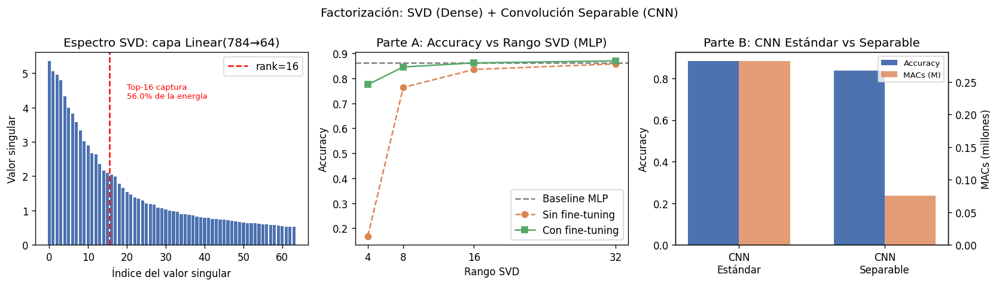
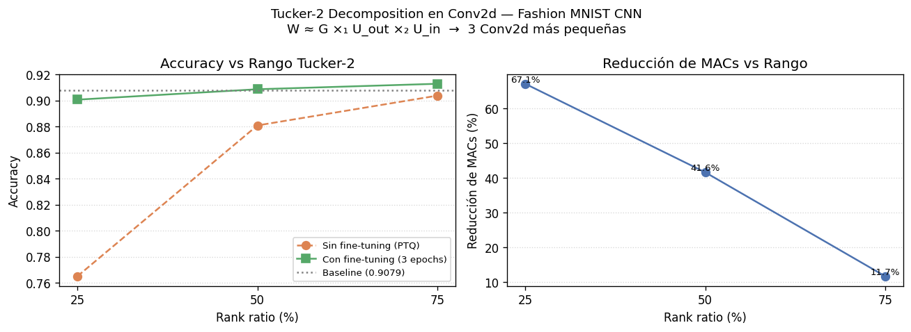

Ejemplo en Código: SVD + Conv. Separable
Output de script01.py
Cargando...Comprimiendo tensores sin perder su esencia matemática
Las redes neuronales tienen gigantescas matrices de pesos, pero suelen ser de rango bajo (low-rank). Gran parte de la información es redundante o linealmente dependiente.
W ≈ U × V
Se aproxima la gran matriz W (m × n) multiplicando dos más chicas: U (m × r) y V (r × n), donde el rango r ≪ m, n.
El gran ahorro:
Descompone la matriz en tres (W = U Σ VT) y desecha los valores singulares más pequeños en la diagonal de Σ.
Uso Real: Compresión de enormes capas de Embeddings en NLP y recomendadores (vocabulario gigante y ralo).
Factorización de Tensores. Matemáticamente complejo (Tucker/CP), pero en la práctica significa separar convoluciones.
Uso Real: Reemplazar Conv 3x3 por 3x1 seguida de 1x3 (Edge). Reduce drásticamente FLOPs manteniendo el campo receptor.
LoRA (Low-Rank Adaptation): La técnica que salvaguardó la revolución de los LLMs democratizando el Fine-Tuning.
El Problema:
Actualizar un modelo masivo genera gastos inasumibles de memoria VRAM (costo por cálculos sobre miles de millones).
La Solución Factorizada:
W0.ΔW) tiene rango muy bajo.Wnueva = W0 + (A × B).Impacto Real: De actualizar Gigabytes a solo Megabytes. Permite personalizar LLMs en GPUs hogareñas convencionales.
Para MCU con minúsculas baterías o cosecha de energía (Harvesting), la factorización de rango clásico sigue siendo limitante.
El Concepto:
Aproximar W por matrices de valores únicamente +1 o -1, compensados por un escalar: W ≈ α · B.
El Milagro en Hardware:
El script examples/factorization/script01.py demuestra los dos tipos de factorización clásica sobre Fashion MNIST:
Parte A — SVD en MLP
Parte B — Conv. Separable en CNN
Cargando...
El script examples/factorization/script02.py extiende SVD a tensores 4D usando HOSVD (Higher-Order SVD):
W(Cout×Cin×kH×kW) ≈ G ×₁ Uout ×₂ Uin
Rank ratio controla el tradeoff:
ratio=0.5 → R = C/2
→ ~50% menos MACs
Cargando...